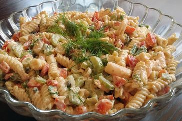

Shrimp pasta salad

Description
A cool, vibrant, and satisfying dish perfect for picnics, potlucks,
or summer meals. Tender pasta and succulent shrimp are tossed with crisp vegetables,
fresh herbs, and a zesty dressing for a light yet flavorful meal.
ingredients
-
4 oz (115g) pasta (penne, rotini, or shells)
-
½ lb (225g) cooked shrimp (peeled & deveined)
-
½ cup cherry tomatoes, halved
-
½ small cucumber, diced
-
¼ small red onion, thinly sliced
-
2 tbsp fresh herbs (dill, parsley, or basil)
-
1 tbsp olive oil
-
1 tbsp lemon juice (or vinegar)
-
½ small garlic clove, minced
-
Salt & pepper to taste
Steps
-
Cook pasta in boiling salted water until tender (8-10 mins). Drain and rinse with cold water.
-
Prep shrimp: If raw, sauté in oil for 2-3 mins until pink. Let cool.
-
Chop veggies: Halve tomatoes, dice cucumber, slice onion.
-
Make dressing: Whisk oil, lemon juice, garlic, salt, and pepper.
-
Combine everything in a large bowl.
-
Chill 15 mins (or up to 4 hours).
-
Serve with extra herbs on top
Home